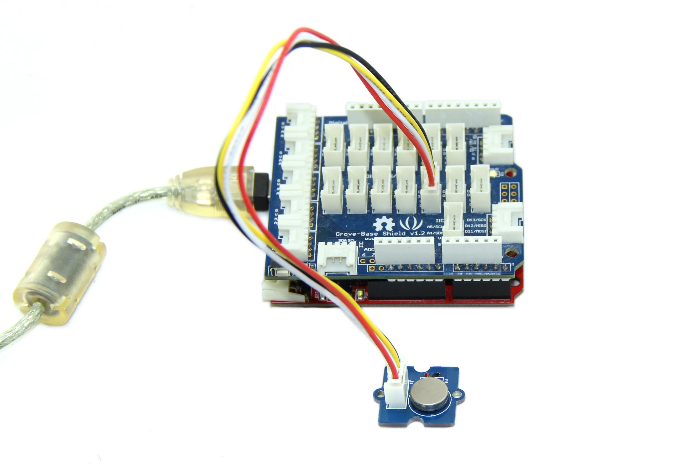

This is a mini vibration motor suitable as a non-audible indicator. When the input is HIGH, the motor will vibrate just like your cell phone on silent mode.


| Item | Min | Typ | Max |
|---|---|---|---|
| Operate Voltage | 3.0V | 5.0V | 5.5V |
| Control Mode | Logic Level
(When Logic HIGH, the motor is ON. When LOW, the motor is OFF.) | ||
| Rated speed | 9000 rpm | ||
To make it vibrate is just as easy as to turn on an LED. Here is an example showing how to turn on the vibration motor.
1. Plug it onto the Digital port 9 of Grove - Base Shield using a Grove cable.
2. Plug the Grove - Base Shield onto Arduino.

3. Connect Arduino to PC by using a USB cable.
4. Copy and paste code below to a new Arduino sketch, and upload it to your Arduino. Please click here if you do not know how to upload.
Demo code like:
int MoPin = 9; // vibrator Grove connected to digital pin 9
void setup() {
pinMode( MoPin, OUTPUT );
}
void loop() {
digitalWrite(MoPin, HIGH);
delay(1000);
digitalWrite(MoPin, LOW);
delay(1000);
}
}
Now, feel the vibration of your motor!
1.You should have got a raspberry pi and a grovepi or grovepi+.
2.You should have completed configuring the development enviroment, otherwise follow here.
3.Connection
4.Navigate to the demos' directory:
cd yourpath/GrovePi/Software/Python/
nano grove_vibration_motor.py # "Ctrl+x" to exit #
import time
import grovepi
# Connect the Grove Vibration Motor to digital port D8
# SIG,NC,VCC,GND
vibration_motor = 8
grovepi.pinMode(vibration_motor,"OUTPUT")
while True:
try:
# Start vibrating for 1 second
grovepi.digitalWrite(vibration_motor,1)
print 'start'
time.sleep(1)
# Stop vibrating for 1 second, then repeat
grovepi.digitalWrite(vibration_motor,0)
print 'stop'
time.sleep(1)
except KeyboardInterrupt:
grovepi.digitalWrite(vibration_motor,0)
break
except IOError:
print "Error"
5.Run the demo.
sudo python grove_vibration_motor.py
| Revision | Descriptions | Release |
|---|---|---|
| v0.9b | Initial public release | May 10, 2011 |
| v1.0 | directly use a I/O port to drive vibration Motor | Nov 5, 2011 |
| v1.2 | add a transistor, use bigger current to drive Vibration Motor | July 11, 2013 |